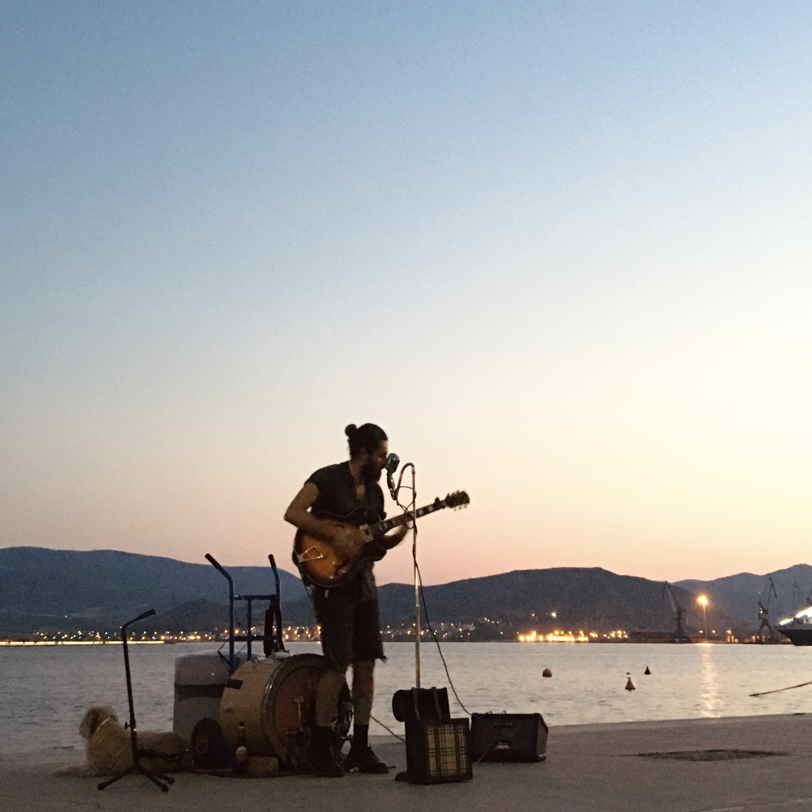

Challe
Eine Zusammenarbeit mit Suhaib Ehsan, die den Schnittpunkt von Songwriting, musikalischer Interpretation und zeitgemäßer Produktion erkundet.

Challe ist ein Rock-&-Pop-Projekt, das in Zusammenarbeit mit Suhaib Ehsan entstanden ist.
Ausgangspunkt war die Idee, dass ein Song direkt und emotional zugänglich bleiben und zugleich Raum für Charakter, Klangtexturen und musikalische Details bieten kann.
Statt die Produktion als etwas vom Song Getrenntes zu behandeln, lag der Fokus darauf, die passende musikalische Umgebung für die Komposition zu finden und die Eigenständigkeit der Performances zu bewahren.
Die Zusammenarbeit entwickelte sich zu einem Dialog unterschiedlicher musikalischer Perspektiven. Das Ergebnis verbindet die Unmittelbarkeit einer songorientierten Rock-&-Pop-Produktion mit der Detailtiefe einer von Musikern geprägten Zusammenarbeit.
Das Ziel war einfach: Der Song bleibt im Mittelpunkt und erhält zugleich seinen eigenen Klang und seine eigene Identität.
Challe
Rock & Pop
- Ptolemaios Armaos
- Suhaib Ehsan
Anhören
Höre dir die vollständige Zusammenarbeit an.
Auf YouTube anhören